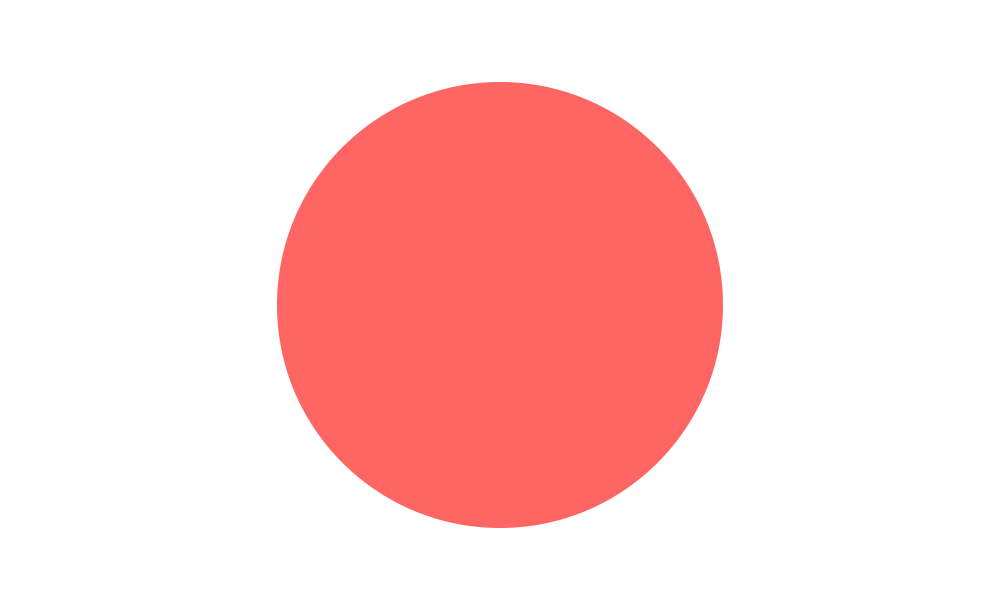

PROFILE
デザイナーとしてキャリアは約20年。好きで始めたデザインの仕事ですが、経験を積むごとに奥深さを知り、終わりのない勉強として楽しんで仕事をしています。過去3社に在籍。
WORK
携わった仕事の中でも特に印象的だったものを紹介しています。また、私自身の働く姿勢や、クリエイティブな仕事に対する考え方についてもこちらをご覧ください。仕事とは関係ない個人的な作品についても触れています。

デザイナーとしてキャリアは約20年。好きで始めたデザインの仕事ですが、経験を積むごとに奥深さを知り、終わりのない勉強として楽しんで仕事をしています。過去3社に在籍。
携わった仕事の中でも特に印象的だったものを紹介しています。また、私自身の働く姿勢や、クリエイティブな仕事に対する考え方についてもこちらをご覧ください。仕事とは関係ない個人的な作品についても触れています。